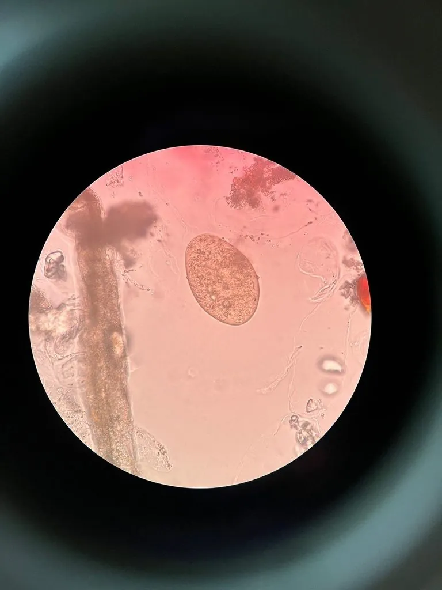

其他无脊椎动物 · 动物界
布氏姜片吸虫 Fasciolopsis buski

寄生于人猪小肠的大型吸虫，虫体肥厚如姜片，经水生植物传播，生食菱角、荸荠可致姜片虫病。
- 分类
- 门扁形动物门纲吸虫纲目棘口吸虫目科片形科属姜片属
- 栖息环境
- 人、猪小肠内（成虫）；水中螺类与水生植物表面（幼虫）
- 地理分布
- 中国南方及东南亚，与水生植物种植区重合
- 保护级别
- 病原寄生虫，无保护需求，属公共卫生防控对象
物种志
布氏姜片吸虫的成虫体长二十至七十五毫米，体宽八至二十毫米，是寄生于人体最大的吸虫之一。虫体扁平肥厚，形如一片姜，前端略尖，后端钝圆，口吸盘小，腹吸盘较大，位于体前部。虫体寄生于人和猪的小肠上段，靠吸盘附着肠壁，取食肠内容物和血液，虫体本身呈肉红色。
它的虫卵随粪便排出，在水中孵出毛蚴，钻入扁卷螺等中间宿主发育成尾蚴，尾蚴逸出后在水生植物表面结囊成囊蚴。人生食菱角、荸荠、茭白、水芹等附着囊蚴的水生植物即感染，猪是重要的保虫宿主。感染轻者无症状，重者腹痛、腹泻、浮肿。该病主要分布于中国南方及东南亚，防护在于不生食水生植物、不喝生水，并对猪进行驱虫管理。
形态与习性
- 成虫体长二十至七十五毫米，人体最大吸虫之一
- 形态扁平肥厚，形如姜片
- 寄生部位人、猪的小肠上段
- 中间宿主扁卷螺等淡水螺
- 感染途径生食菱角、荸荠、茭白等水生植物
- 防护不生食水生植物、不喝生水、猪只驱虫
趣味知识
- 它是人体最大的吸虫，摊开来比一枚硬币还长。
- 菱角和荸荠表面那层薄薄的囊蚴，是它进入人体的入口。
- 猪是它重要的保虫宿主，管好猪粪就能切断一大半传播。